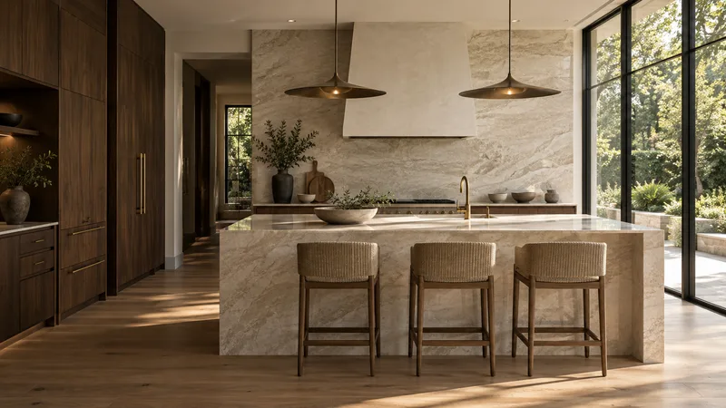
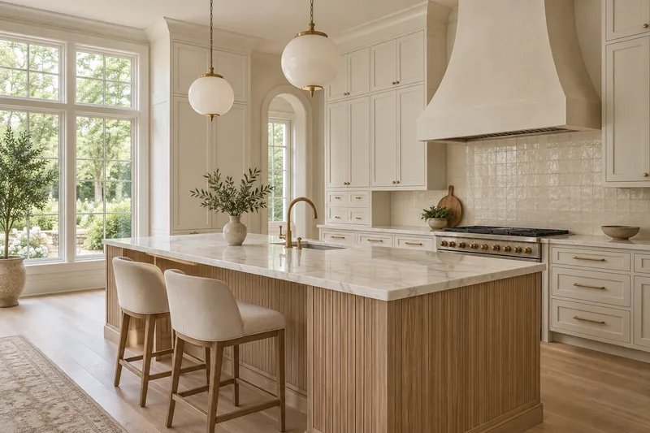
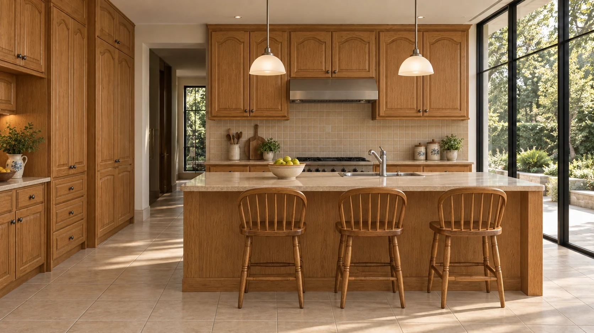

Cabinet doors & hardware
Loose, damaged or misaligned cabinet doors, hinges, pulls and other minor cabinetry issues.
TURNOVER KITCHEN FIX · METRO ATLANTA
Cabinet doors. Countertop details. Lighting. Faucets. The small kitchen issues that can delay a turnover do not always need a full remodel. We handle them — faster and for less than treating every issue like a renovation.
WHAT WE CAN HELP WITH · SERVICE VISITS START AT $149
Kitchen Quick-Fix Visit — starting at $149 labor. Designed for one straightforward minor repair or adjustment during a scheduled visit. Parts and materials are additional. We confirm scope and price before work begins.
Loose, damaged or misaligned cabinet doors, hinges, pulls and other minor cabinetry issues.

02Minor countertop repairs, trim and practical fixes when replacement of the entire kitchen is not necessary.

03Fixture replacement, under-cabinet lighting and coordination for minor kitchen lighting problems.

04Faucet replacement and related minor sink-area repairs, with plumbing work coordinated when needed.
Small trim, caulking, touch-up and repair items that help a kitchen look ready for the next resident.
Send us a short list of kitchen issues and photos. We can review what fits one visit and what needs separate trade work.
Starting price: $149 labor for a scheduled Kitchen Quick-Fix Visit covering one straightforward minor repair or adjustment. Additional tasks, time, parts and materials are quoted separately. Electrical, plumbing, countertop fabrication and other specialty work may require a qualified trade and is priced separately. Exact scope is confirmed before work starts.
PROPERTY TURNOVER SUPPORT
We do. Instead of calling a full renovation crew for every loose cabinet door, tired faucet, countertop detail or lighting issue, Accent Property Services can handle focused kitchen punch-list work — often faster and at a lower total cost than treating every issue like a major remodel.
For property managers, the goal is simple: identify the issues, define the scope, complete the practical repairs and get the kitchen ready.
A SIMPLE PROCESS
Show us the cabinet, countertop, lighting, faucet or other kitchen issue.
We confirm whether it fits a quick-fix visit or needs a larger repair or specialty trade.
We coordinate the visit and confirm pricing before the work begins.
READY TO CLEAR THE PUNCH LIST?
Send the property address, a few photos and the list of kitchen issues.
678-242-9309 accentgv@gmail.comMETRO ATLANTA · SANDY SPRINGS · DECATUR
Include the property address, your preferred timing, and photos of each issue.
Prepare email requestNothing is sent automatically. Review the email and attach photos before sending.